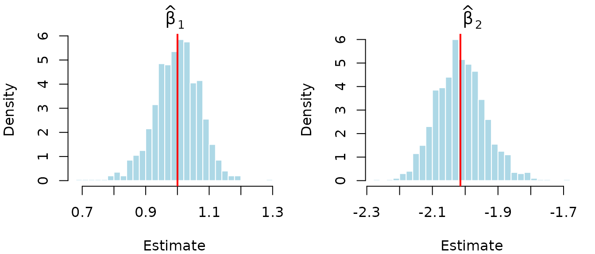
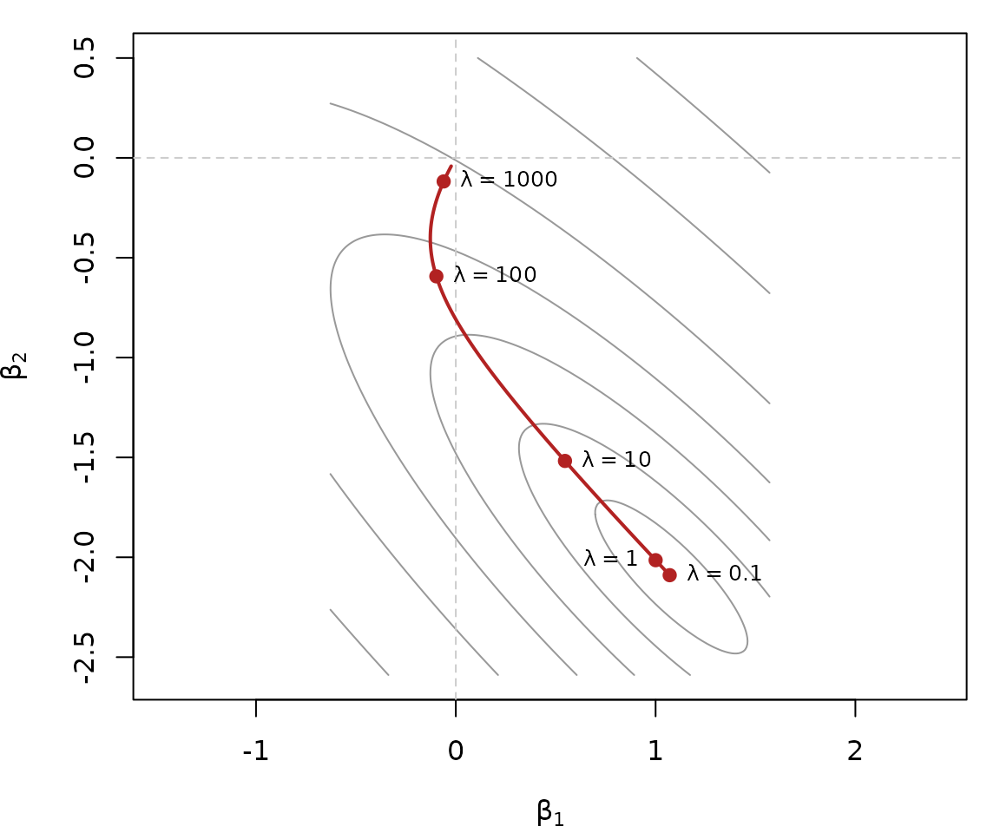
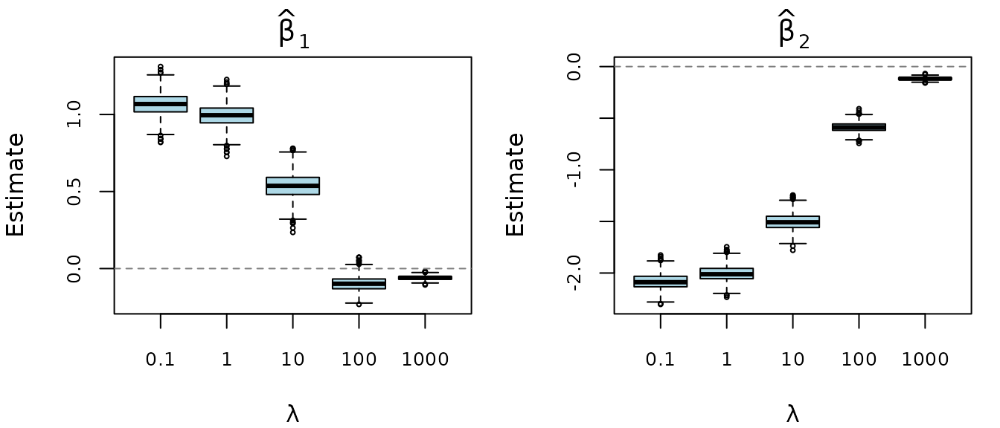

It is often easier to write a function that operates on “one unit” of the data, such as a single vector or matrix. As an example, we implement ridge regression the standard way, i.e., by solving the penalized normal equations: \[ (X^\top X + \lambda I) \hat\beta = X^\top y. \] The data are a design matrix \(X \in \mathbb{R}^{100 \times 2}\), with 100 observations of 2 correlated predictors, and the response \(y\), a matrix with 100 rows and one column.
Click to show how the data are generated
Below is our model fitting function:
ridge <- jit(function(X, y, lambda) {
XtX <- t(X) %*% X
nv_solve(XtX + lambda * diag(ncol(X)), t(X) %*% y)
})
ridge(X, y, lambda = 1)
#> AnvlArray
#> 1.0002
#> -2.0146
#> [ CPUf32{2,1} ]In order to quantify the uncertainty of the \(\hat\beta\), we will use bootstrapping. One way to do this is to just loop over every bootstrap sample and call the model fitting function on each.
B <- 1000L
idx <- nv_sample_int(c(n, B), n)
fit_sample <- jit(function(i, X, y, lambda) ridge(X[i, ], y[i, ], lambda))
coefs_loop <- lapply(seq_len(B), function(b) fit_sample(idx[, b], X, y, lambda = 1))
coefs_loop <- do.call(nv_cbind, coefs_loop)
shape(coefs_loop)
#> [1] 2 1000What vectorize() allows is to replace the iterative loop
through a single “vectorized” call that processes all iterations at
once. We call this transformation vectorize() because it is
in the spirit of base::Vectorize, although it is more
general. Unlike base::Vectorize, which maps a function over
the elements of its arguments, vectorize() maps it over
slices along an axis: over the columns of a matrix, for example, not
over its elements. In other array computing frameworks this
functionality is often called vmap (for “vectorized
map”).
For every argument we need to specify whether it varies between every
iteration or not. By default (in_axes = -1L),
vectorize() maps over the last axis of every argument that
is an array with at least one axis. A scalar, such as
lambda = 1, has no axis, so it is never mapped over: every
application gets it as it is. In our case, only the bootstrap sample
index i varies between iterations and the different
iterations are stored along the trailing batch axis
(i = -1L):
bootstrap <- jit(vectorize(fit_sample, in_axes = list(i = -1L)))
coefs <- bootstrap(idx, X, y, lambda = 1)
shape(coefs)
#> [1] 2 1 1000The batch axis can be any axis of an argument, but we recommend the
last one, as idx does with one sample per column. This
plays well with the column-major layout of anvl’s arrays: the slices
along the last axis are contiguous in memory.
The results are stacked along a trailing batch axis, i.e.,
coefs[, 1, b] is the estimate of the b-th
sample, and the bootstrap standard errors are the standard deviations
along that axis:
nv_sd(coefs, axes = 3L)
#> AnvlArray
#> 0.0726
#> 0.0756
#> [ CPUf32{2,1} ]The histograms show the bootstrap distribution of each coefficient around its estimate on all data (red):

The advantage of the vectorized version over the manual loop is that it can run faster. Moreover, we might want to map across different axes. For example, instead of mapping over bootstrap samples, we might want to look at how the estimates change with different penalty values:
lambdas <- nv_array(c(0.1, 1, 10, 100, 1000), dtype = "f32")
ridge_path <- jit(vectorize(ridge, in_axes = list(lambda = -1L)))
ridge_path(X, y, lambdas)
#> AnvlArray
#> (1,.,.) =
#> 1.0706 1.0002 0.5464 -0.0973 -0.0607
#>
#> (2,.,.) =
#> -2.0896 -2.0146 -1.5176 -0.5932 -0.1181
#> [ CPUf32{2,1,5} ]The contour lines show the residual sum of squares \(\|y - X\beta\|^2\), which is smallest at the least squares estimate. The larger the penalty, the further it pulls the estimate away from there towards zero, along the ridge path (red) over a finer grid of penalties:

So far, the bootstrap samples were drawn up front and passed in as
idx. Instead, fit_resample() draws its sample
itself (see the random numbers
article). It then has no data to map over, so we map it over the
replicate numbers, which it does not use, like
lapply(seq_len(B), function(b) ...) does:
fit_resample <- jit(function(b, X, y, lambda) {
i <- nv_sample_int(nrow(X), nrow(X))
ridge(X[i, ], y[i, ], lambda)
})
replicates <- nv_seq(1L, B)
bootstrap_resample <- jit(vectorize(fit_resample, in_axes = list(b = -1L)))
coefs <- with_nv_seed(1L, bootstrap_resample(replicates, X, y, lambda = 1))Every replicate draws a sample of its own, and
vectorize() guarantees that these are the random numbers a
loop applying fit_resample() to one replicate after the
other draws; the random state also advances as it does after that loop.
So vectorizing a simulation changes how fast it runs, not its results:
from the same seed, set for both with with_nv_seed(), the
loop gives the same estimates.
coefs_loop <- with_nv_seed(1L, {
lapply(seq_len(B), function(b) fit_resample(replicates[b], X, y, lambda = 1))
})
coefs_loop <- do.call(nv_cbind, coefs_loop)
all.equal(as_array(coefs)[, 1L, ], as_array(coefs_loop))
#> [1] TRUEWith randomness = "common"
(randomness = "same" in PyTorch’s
torch.func.vmap()), the slices draw common random numbers:
every slice draws the ones a single application of the function draws,
and the random state advances as after that application. That is what a
bootstrap of the ridge path needs within a replicate: every penalty is
fitted on the same sample, so that the estimates differ only by the
penalty. So the inner vectorize() maps
fit_resample() over the penalties with
randomness = "common", and the outer one maps that over the
replicates with the default randomness = "independent", so
that every replicate draws a sample of its own:
path_resample <- vectorize(fit_resample, in_axes = list(lambda = -1L), randomness = "common")
bootstrap_path <- jit(vectorize(path_resample, in_axes = list(b = -1L)))
paths <- with_nv_seed(1L, bootstrap_path(replicates, X, y, lambdas))
shape(paths)
#> [1] 2 1 5 1000Every call appends its batch axis, so paths[, 1, l, b]
is the estimate for the l-th penalty on the
b-th sample. The boxplots show the bootstrap distribution
of each coefficient for every penalty:

A function that vectorize() maps over can also contain
loops and branches whose course depends on the values mapped over. Such
a loop runs a different number of times for every slice.
vectorize() runs it until the condition fails for every
slice, and a slice whose condition has failed keeps its state from then
on, so every slice ends where a loop over the slices leaves it. Newton’s
method for the square root, for example, stops once its step is small,
which takes more steps the larger the number:
newton_sqrt <- function(a) {
nv_while(list(x = a, step = a), function(x, step) abs(step) > 1e-10 * x, function(x, step) {
x_new <- (x + a / x) / 2
list(x = x_new, step = x - x_new)
})$x
}
jit(vectorize(newton_sqrt))(nv_array(c(2, 9, 1e6), dtype = "f64"))
#> AnvlArray
#> 1.4142
#> 3.0000
#> 1000.0000
#> [ CPUf64{3} ]Likewise, when the predicate of nv_if() depends on the
values mapped over, every branch that some slice takes runs, and each
slice keeps the result of its own branch. A slice runs a branch it does
not take on the values of a slice that takes it, so the branch never
sees values it is not meant for: mapped over an x with a
0 in it, the gradient of
nv_if(x > 0, function() sqrt(x), function() x) is
1 there, not NaN, as that slice does not take
the sqrt(). What a loop body or a branch does for a slice
that is done with the loop or does not take the branch is discarded,
except for its side effects: nv_print() prints for those
slices, too.
Beyond this, vectorize() can map over parts of nested
list arguments, place the batch axis of every output with
out_axes, and compose with other transformations; see
?vectorize for more.